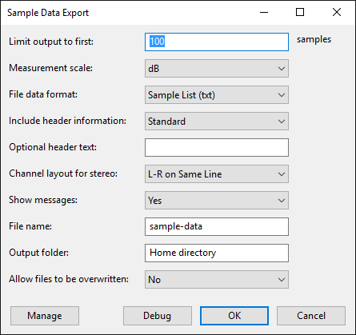

Sample Data Export
From Audacity Development Manual
See also the companion tool Sample Data Import.
- Accessed by:
- 
Limit output to first <n> samples
- The number of samples processed will be the number of samples in the selection, up to a maximum of the number entered here. The default number of samples is 100.
- Sample Data Export is limited internally to an absolute maximum of 1 million samples.
- Processing a large number of samples can create extremely large output files that may be difficult to open. Very large TXT files can usually be opened succesfully in a word processing application such as WordPad. For HTML output it may be advisable to limit the number of samples to a maximum of a few hundred.
- The track sample rate as indicated on the Track Control Panel indicates the number of samples per second. If the track and project rates are the same, the number of samples in a selection may be viewed in Selection Toolbar if you choose one of the selection formats that includes samples.
Measurement scale
- dB: Sample values are displayed on a dB scale relative to full scale (as in the Waveform (dB) view)
- Linear: Values are displayed on a linear scale +/- 1 (as in the Audacity audio track Waveform view).
File data format
Data in your chosen format as listed below appears after any header information which you included. Text files where the output produces columns may not have perfectly lined-up columns due to formatting limitations of text files.
- Sample List (txt): produces a plain text file with a list of sample values.
- Indexed List (txt): produces a plain text file with an indexed list of sample values: sample number followed by sample value.
- Time Indexed (txt): produces a plain text file with the time (relative to the start of the selection) followed by sample value
- Data (csv): produces a CSV formatted file. This may be suitable for importing into spreadsheet applications for further analysis.
- Web Page (html): produces an HTML 5 document that contains all of the header information and a table of sample data with sample number, time, linear and dB values. Web browsers that are not HTML 5 compliant may not display the page correctly.
Include header information
- None: Prints only the sample data, preceded by any text you entered in the optional header text box (leave blank for none).
- Minimal: Prints a minimal header that contains:
- Sample rate
- Units (linear or dB)
- Optional header text (leave blank for none)
- Standard: In addition to the Minimal header information, the following is also included:
- File name
- Number of samples
- Duration (seconds)
- Mono or stereo
- All: In addition to the Standard header information, the following is also included:
- Peak amplitude (linear and dB)
- Unweighted RMS level (dB)
- DC offset
Optional header text
This is provided for adding notes to the output file. In text files, use ~~% to start a new line, or in HTML files use <br>.
Channel layout for stereo
For TXT and CSV files, provides a layout choice for stereo tracks.
- L-R on Same Line: Prints a list of alternate left channel sample followed by right channel sample. For .CSV files this will produce a column of sample values for each channel:
1 0.59528 1 0.59528
...
2 0.56063 2 0.56063
3 0.52377 3 0.52377
- Alternate Lines: Prints a sample value from the left channel followed by a sample value from the right channel on the same line:
1 0.59528
...
1 0.59528
2 0.56063
2 0.56063
3 0.52377
3 0.52377
- L Channel First: All the left channel samples are listed, followed by all of the right channel samples. For .CSV files this will produce a row of values for each channel:
Left Channel.
1 0.59528
2 0.56063
3 0.52377
...Right Channel.
1 0.59528
...
2 0.56063
3 0.52377
Show messages
- Yes: (default) Confirmation, error and warning messages will be shown after processing.
- Errors Only: Only error messages will be shown after processing.
- None: No messages will be shown after processing.
It may be useful to disable confirmation messages if Sample Data Export is to be used in a Chain for batch processing.
File name
The desired name of the output file. A file name extension is not required as it will be added automatically.
Output folder
The default output folder is the Home directory.
This is normally:
- Microsoft Windows Vista and later: <root>\Users\<username>
- Microsoft XP and Server 2003 : <root>\Documents and Settings\<username>
- Mac: /Users/<username>
- Linux: /home/<username>
To select a different output folder, enter the full path name, for example D:\Samples Text Files. The output folder must exist.
On Linux, the abbreviation ~/ may be used for the home directory.
Allow files to be overwritten
- No: This is the default choice. If the selected file already exists the chosen file name will be appended with a number. For example, if output.txt is the chosen name and that file already exists, the chosen name will be changed to output1.txt. If that file also exists the name will be changed to output2.txt, and so on until a unique name is found.
- Yes: If the file name already exists, it will be overwritten without prompting.
| If you select multiple tracks and Allow files to be overwritten is set to No, they will be saved to separate files with a number appended to the name. If you set Allow files to be overwritten to Yes, only the last file for multiple tracks will be retained. |
The buttons
Clicking on the command buttons give the following results:
- gives a dropdown menu enabling you to manage presets for the tool and to see some detail about the tool. For details see Manage presets.
- applies the effect to the selected audio with the current effect settings, but unlike the effect runs in debug mode. This is primarily of use when writing or editing Nyquist plug-ins.
- In addition to the normal plug-in behavior, a "debug window" opens to display error messages, normally the debug window will be empty.
- applies the effect to the selected audio with the current effect settings.
- aborts the effect and leaves the audio unchanged.
Nyquist effect plug-ins are supported in Chains, but Analyze (and Generate) plug-ins are not supported. So to use Sample Data Export in a Chain it is necessary to convert it into an Effect plug-in. To do this, the file sample-data-export.ny must be edited.
The file sample-data-export.ny can be found in the "Plug-Ins" folder inside the Audacity installation folder. On Windows computers, this is usually under "Program Files". On Mac, it is usually under "Applications". On Linux, you can use various plug-in locations. To convert Sample Data Export into an Effect type plug-in, open the file in a plain text editor (such as Notepad on Windows) and change the third line:
to: